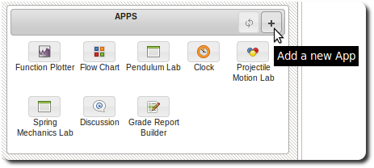

Deployed APPs
Managing Deployed APPs
Deployed APPs are APPs that have been submitted to the production environment for end users. Deployed APPs
are available in the APP store for users to install and use. You can browse you deployed APPs from System
navigation panel under the Bin item.

Undeploy APPs
-
To undeploy an APPs, brows the APP taxonomy under the Bin item and right click on the APP you
wish to undeploy.
-
Select "Undeploy" to remove the APP from production.